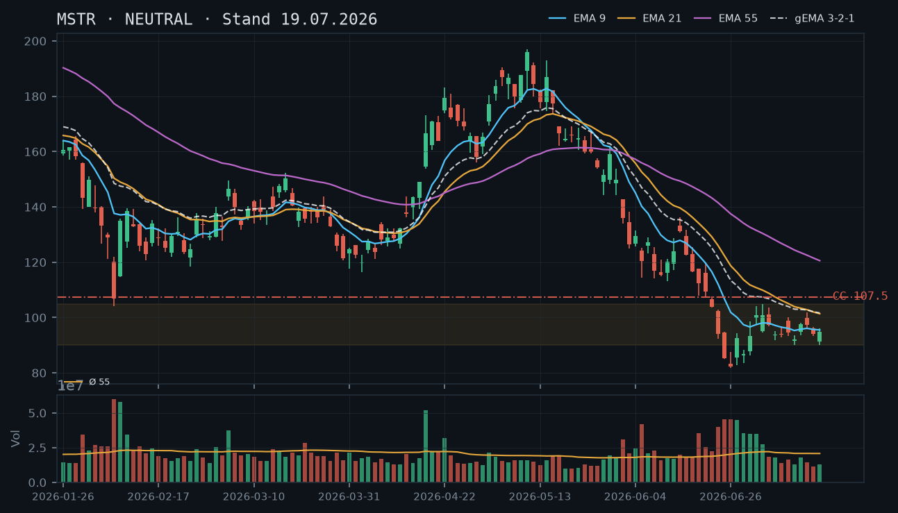
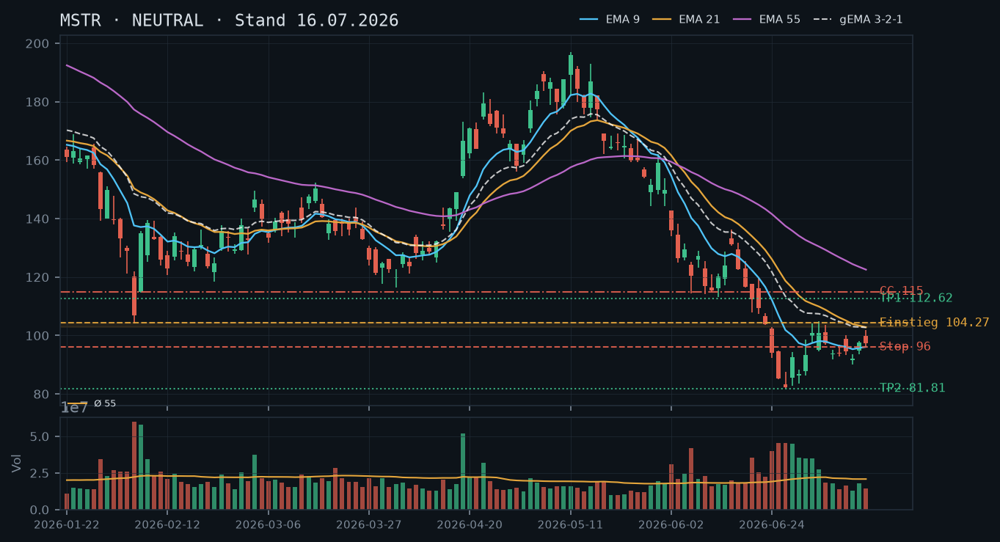
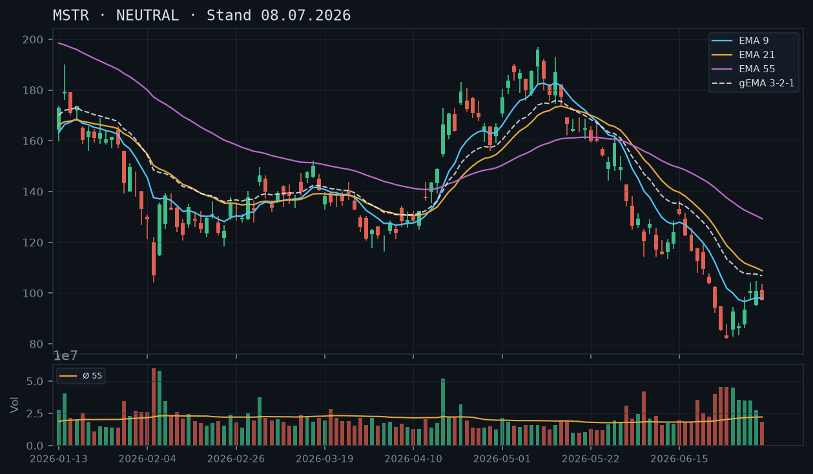

MSTR
Analyse-Historie · neueste zuerstMSTR konsolidiert weiterhin in der fragilen 90–105-Zone mit bearisher EMA-Staffelung – die Erholung vom Crash-Tief (81,81) wirkt stabil, aber das Volumen bleibt schwach; ein Covered Call auf den Aktienbestand ist das einzige vertretbare Stillhalter-Geschäft.

1 · Trendstruktur
MSTR befindet sich seit dem Crash-Tief vom 26.06. (81,81) in einer mehrtägigen Konsolidierung zwischen ~90 und ~105 USD. Die Trendstruktur ist weiterhin bearish: Der Kurs hat seit März eine Sequenz fallender Hochs gebildet (173 → 104 → 101,95 am 21.07.) und liegt weit unter allen drei EMAs. Das letzte relevante lokale Hoch vom 21.07. bei 104,60 ist der entscheidende Pivot – erst ein Schlusskurs darüber würde das Muster der fallenden Hochs unterbrechen. Support-Cluster: 90–92 USD (mehrfach getestet: 13.07./17.07.), darunter das unbestätigte Tief 81,81. Widerstand: 103–105 USD (Hochs 02.07./06.07./15.07./21.07.) – diese Zone ist mittlerweile vierfach getestet und damit als belastbarer Widerstand zu werten.
2 · Candlestick-Formationen
Der 22.07. schloss mit einer kleinen bearishen Kerze (Doji-ähnlich, Close 100,01 nach Open 100,06) bei niedrigem relativen Volumen von 0,63 – kein Momentum auf der Unterseite, aber auch keine Kaufbereitschaft. Die Kerze vom 21.07. (Hammer-Charakter, Open 101,31, Close 101,95, rel. Volumen 0,96) hat den Test der Widerstandszone 103–105 erneut nicht abgeschlossen – das Hoch 104,60 hält als Deckel. Das Gesamtbild der letzten fünf Kerzen zeigt eine Kompressions-Phase mit abnehmender Amplitude und fehlendem Volumenimpuls – typisch für eine Pause vor einer Richtungsentscheidung, nicht für eine Trendwende.
3 · EMA-Lage (9 / 21 / 55)
Die EMA-Staffelung bleibt vollständig bearish: EMA9 (97,74) < EMA21 (101,03) < EMA55 (118,44). Der gema_321 liegt bei 102,29 und damit knapp über EMA9, aber unterhalb EMA21 – der Verbund komprimiert sich, was eine Entscheidungsphase signalisiert, jedoch keine Umkehr. Der Kurs (Close 100,01) liegt aktuell zwischen EMA9 (97,74) und EMA21 (101,03) – das ist die erste echte EMA-Sandwich-Situation seit dem Crash, aber noch kein bullishes Signal, solange EMA21 und gema_321 als Deckel wirken.
4 · Trade-Setup
| Richtung | Kein Trade |
| Einstieg | Long: Schlusskurs über 104,60 (Bruch des Widerstands-Clusters auf Schlusskursbasis, idealerweise mit rel. Volumen > 1,2); Short: Schlusskurs unter 90,02 (Tief 13.07.) |
| Stop | Long-Stop: 95,00 (unter EMA9 und Konsolidierungs-Boden) / Short-Stop: 97,00 |
| Ziel | Long: 112–115 / Short: 82 (Wiedertest Crash-Tief) |
| CRV | Beide Szenarien nur bei klarer Bestätigung auslösbar – kein bevorzugtes Setup heute |
5 · Stillhalter (max. 12 Tage)
Mit 400 Aktien im Bestand (IBKR-Snapshot 11:36 Uhr) ist ein Covered Call weiterhin das einzige vertretbare Stillhalter-Geschäft. Der vierfach getestete Widerstand bei 103–105 liefert jetzt eine klar belegbare technische Grundlage für den Strike. Ein CSP bleibt weiterhin ausgeschlossen – die bearishe EMA-Staffelung ist intakt, der Support bei 90 ist unbestätigt und die fundamentalen Risiken (Bitcoin-Korrelation, Schuldenlast) wurden in den Analysen vom 16.07. und 19.07. ausführlich belegt; diese Einschätzung wird bestätigt.
| Geschäft | Covered Call |
| Strike | 107.5 |
| Puffer | 7.9 % |
| Zone | oberhalb des vierfach bestätigten Widerstands-Clusters 103–105 (Hochs 02.07./06.07./15.07./21.07.) mit Sicherheitsabstand |
| Verfall bis | 2026-08-01 (9 Tage) |
| Begründung | Der Strike 107,50 liegt ~3 USD über dem zuletzt vierfach getesteten Widerstand 103–105 und bietet damit einen technisch fundierten Puffer. Der Kurs (99,60 laut IBKR-Snapshot) müsste zunächst die 103–105-Zone auf Schlusskursbasis nachhaltig brechen, bevor der CC unter Druck gerät – das wäre ein klarer Roll-Trigger. Der Puffer von ~7,9% ist geringer als in der Voranalyse (13,3%) gewählt, weil sich die Widerstandszone mittlerweile viermal behauptet hat und damit statistisch robuster ist; dennoch ist MSTR-Volatilität zu berücksichtigen. Andienung bei 107,50 wäre charttechnisch vertretbar: Der Kurs wäre dann aus dem Widerstandsbereich ausgebrochen, aber noch weit unter den nächsten großen Levels (EMA21 ~101 + EMA55 ~118). In der Optionskette zu prüfen: Liegt die Prämie am 107,50er Strike (Verfall 01.08.) bei mindestens 1,5–2,5% des aktuellen Kurses? Falls Liquidität am 107,50er schwach, auf 105,00 ausweichen – dann aber Andienungsrisiko direkt an der Widerstandszone beachten. Roll-Trigger: Schlusskurs über 104,60 mit rel. Volumen > 1,2 → CC rollen auf 112,50 oder 115,00 bei gleichem oder nächstem Verfall. |
Bestand: Aktienbestand vorhanden (Long-Position, 400 Stück laut IBKR-Snapshot), keine offenen Optionspositionen. Der Bestand deckt bis zu 4 Covered-Call-Kontrakte vollständig ab – kein Naked-Call-Risiko. Die CC-Empfehlung aus der Analyse vom 19.07. (Strike 107,50, Verfall 25.07.) ist laut Snapshot ausgelaufen bzw. nicht eröffnet worden – es besteht keine Altposition zu rollen. Neuer Einstieg mit Verfall 01.08. ist frisch zu platzieren. Sollte der Kurs unter 90,02 (Tief 13.07.) fallen, ist die Gesamtposition (Aktien + CC) neu zu bewerten.
Ausführliche Analyse vom 23.07.2026 anzeigen
MSTR – Detailanalyse 23.07.2026
1. Trendstruktur & Zonen-Herleitung
MSTR hat seit dem Hoch bei ~173 USD (April 2026) eine klassische Abwärtsstruktur mit fallenden Hochs und fallenden Tiefs durchlaufen. Der beschleunigte Crash-Abschnitt (18.06.–26.06.) führte vom Niveau ~112 auf das Tief bei 81,81 (26.06., rel. Volumen 2,26 – mehr als doppelter 55er-Schnitt) in nur sieben Handelstagen. Seitdem läuft eine Konsolidierungsphase.
Widerstand 103–105 USD: Dieses Cluster ist mittlerweile vierfach auf Schlusskursbasis getestet worden: Hoch 02.07. (104,11), Hoch 06.07. (104,78), Hoch 15.07. (101,95 – erster Ausreißer unter 103), Hoch 21.07. (104,60). Die Zone ist damit von einem 'unbestätigten Bereich' (Analyse 16.07.) zu einem belastbaren Widerstand geworden. Erst ein Schlusskurs darüber mit Volumen > 1,2x Schnitt wäre ein klares Ausbruchssignal.
Support 90–92 USD: Mehrfach getestet (13.07. Tief 90,02; 17.07. Tief 90,06). Zwei Tests reichen für eine Bestätigung, der Support ist aber noch fragil – kein Volumennachweis, dass hier institutionelle Käufer aktiv sind. Das Crash-Tief 81,81 bleibt der ultimative Support; darunter ist die Struktur offen.
Abgleich mit früheren Analysen: Die Analyse vom 08.07. (NEUTRAL, kein Trade) wird vollständig bestätigt. Die Analyse vom 16.07. (Bounce auf sinkendem Volumen, fragile Erholung) wird ebenfalls bestätigt – der Kurs hat seitdem die 105er-Zone nicht gebrochen. Die CC-Empfehlung vom 19.07. (Strike 107,50, Verfall 25.07.) war technisch korrekt positioniert; laut IBKR-Snapshot existieren keine offenen Optionspositionen, d.h. der Trade wurde nicht eröffnet oder ist regulär ausgelaufen.
2. Candlestick- & Volumenanalyse
Die letzten fünf Kerzen (17.07.–22.07.) zeigen eine deutliche Amplitudenverkleinerung: Tagesrange schrumpfte von ~5 USD (17.07.) auf ~3,83 USD (22.07.). Das relative Volumen liegt konsistent unter 1,0 (0,63/0,78/0,96/0,63 an den letzten vier Tagen) – kein Momentum in keine Richtung. Diese Kompressions-Phase ist typisch für eine Konsolidierung vor einem Richtungsimpuls, nicht für eine Trendwende. Besonders auffällig: Der 22.07. schloss mit einem Doji-ähnlichen Muster (Open 100,06, Close 100,01) exakt an der psychologischen 100-USD-Marke – hier liegt keine Unterstützung per se, aber ein gut beobachteter Level.
3. EMA-Lage & gema_321-Verbund
EMA9: 97,74 | EMA21: 101,03 | EMA55: 118,44 | gema_321: 102,29. Die vollständig bearishe Reihenfolge (9 < 21 < 55) ist unverändert. Positiv: Der gema_321-Verbund hat seit dem Crash-Tief seinen Abfall verlangsamt (von 125 auf 102), was auf eine Stabilisierung hindeutet – aber kein Umkehrsignal. Der aktuelle Kurs (99,60, Snapshot) liegt zwischen EMA9 und EMA21, was eine neutrale Sandwich-Lage ergibt. EMA21 (101,03) und gema_321 (102,29) agieren als doppelter Deckel im 101–102-Bereich.
4. Direkte Trade-Setups (Alternative Szenarien)
Szenario A – Long Breakout (bevorzugt bei Bestätigung): Einstieg: Stop-Buy über 104,80 (Tagesschluss über dem viertobersten Widerstand-Cluster). Stop: 95,00 (unter EMA9, unter dem jüngsten Konsolidierungs-Boden). Ziel 1: 112 USD (Zone Juni-Hoch/EMA-Niveau), Ziel 2: 115 USD. CRV zu Ziel 1: (112 – 104,80) / (104,80 – 95,00) = 7,20 / 9,80 = 0,73:1 – zu schwach für direktionalen Trade, nur als Begleitposition zu CC sinnvoll. CRV zu Ziel 2: (115 – 104,80) / 9,80 = 1,04:1 – ebenfalls grenzwertig. Fazit: Kein attraktives CRV – kein eigenständiger Long-Trade empfohlen.
Szenario B – Short Breakdown: Einstieg: Stop-Sell unter 89,50 (Schlusskurs unter dem Support-Cluster 90–92). Stop: 97,00. Ziel 1: 82 USD (Wiedertest Crash-Tief 81,81). CRV: (89,50 – 82) / (97,00 – 89,50) = 7,50 / 7,50 = 1,0:1 – zu schwach. Erst unter 81,81 (strukturloses Terrain) würde sich ein Short lohnen, aber dann sind Risiken kaum kalkulierbar. Fazit: Kein Short-Trade empfohlen.
Szenario C – Warten auf Konsolidierungs-Auflösung: Das ist die aktuelle Empfehlung. Die Range 90–105 hält; erst ihr klarer Bruch liefert ein auslösbares Setup mit vertretbarem CRV.
5. Stillhalter-Analyse (Schwerpunkt)
CSP – weiterhin ausgeschlossen: Die Ablehnungsgründe aus den Analysen vom 16.07. und 19.07. bleiben vollständig gültig: (1) bearishe EMA-Staffelung intakt, (2) Support 90–92 ist schwach bestätigt, (3) fundamentale Risiken (Bitcoin-Abhängigkeit, Schuldenlast) machen eine Andienung bei einem technisch fragilen Level besonders gefährlich. Die neue Analyse bestätigt ausdrücklich: kein CSP.
CC – Strike-Herleitung (107,50 / Verfall 01.08.2026):
- Technische Basis: Der Widerstand 103–105 ist viermal bestätigt (02.07., 06.07., 15.07., 21.07.). Der Strike 107,50 liegt ~2,50–4,50 USD über dieser Zone und nutzt sie als Puffer.
- Puffer zum IBKR-Kurs (99,60): (107,50 – 99,60) / 99,60 = 7,9%. Das ist konservativer als ein 'normaler' Titel, aber angesichts der viermal behaupteten Widerstandszone vertretbar. MSTR-typische Tagesbewegungen von 3–6% sind eingepreist.
- Andienungsszenario: Würde MSTR bei 107,50 angedient, bedeutet das: Kurs hat den viermal getesteten Widerstand gebrochen und ist ~8% über heutiges Niveau gestiegen. Das wäre charttechnisch eine signifikante Strukturveränderung – ein Abgabe-Level bei 107,50 wäre in diesem Fall fair und akzeptabel. Der Aktienbestand (400 Stück) würde dabei vollständig oder teilweise abgerufen.
- Roll-Trigger: (1) Schlusskurs über 104,60 mit rel. Volumen > 1,2 → sofort rollen auf 112,50 oder 115,00 (nächster Widerstand) bei Verfall 01.08. oder 08.08. (2) Kurs fällt unter 90,02 → CC wertlos verfallen lassen, Gesamtposition (Aktien) neu bewerten. (3) CC verliert >50% seines Zeitwerts → Frühzeitiges Schließen und ggf. neu aufsetzen.
- Alternative Strike 105,00: Falls Liquidität am 107,50er schwach ist (breiter Spread, geringes Open Interest), auf 105,00 ausweichen. Dann liegt der Strike aber direkt an der Widerstandszone – Andienung wäre häufiger zu erwarten; dies ist nur akzeptabel, wenn die Prämie entsprechend höher ist und ein Abgabe-Level von 105 strategisch gewollt ist.
- In der Optionskette zu prüfen: Prämie am 107,50er (Verfall 01.08.) sollte mindestens 1,5–2,5 USD betragen, um den 7,9%-Puffer zu rechtfertigen. MSTR-IV ist typischerweise extrem hoch (oft 100%+), was attraktive Prämien generieren sollte – aber auch Gap-Risiko impliziert. Spread-Qualität prüfen (Bid/Ask unter 0,20 USD ist akzeptabel).
Bestandseinordnung: Der Aktienbestand (400 Stück, Long) deckt bis zu 4 Covered-Call-Kontrakte vollständig ab. Es handelt sich ausschließlich um gedeckte Calls – kein Naked-Call-Risiko. Die Position aus der Analyse vom 19.07. (CC 107,50, Verfall 25.07.) ist laut Snapshot nicht aktiv – frischer Einstieg mit Verfall 01.08. ist die saubere Lösung. Keine bestehende Option muss gerollt werden.
MSTR hält sich nach dem Crash-Tief bei 81,81 in einer fragilen Seitwärts-Konsolidierung zwischen 90 und 105 USD – die bearishe EMA-Staffelung bleibt voll intakt, doch der Kurs stabilisiert sich; ein Covered Call auf den bestehenden Aktienbestand (400 Stück) ist das einzige vertretbare Stillhalter-Geschäft.

1 · Trendstruktur
Der übergeordnete Abwärtstrend ist intakt: MSTR fiel von ~190 USD (Anfang Mai) bis zum Crash-Tief bei 81,81 USD (26.06.), ein Rückgang von rund 57 %. Seit diesem Tief läuft eine Konsolidierung zwischen grob 82 und 105 USD, ohne dass ein höheres Hoch oder ein klarer Trendbruch etabliert wurde. Das letzte bestätigte Hoch liegt bei ~104,78 (06.07.) – das wurde bisher nicht mehr erreicht. Die Tiefs der letzten Wochen (90,02 am 13.07., dann 94,85 am 17.07.) bilden zwar ein leicht steigendes Muster, aber noch keine bestätigte Trendwende. Die Zone 90–94 fungiert aktuell als unbestätigter Support-Bereich.
2 · Candlestick-Formationen
Die letzten fünf Kerzen (13.–17.07.) zeigen ein Konsolidierungsmuster mit engen Körpern und begrenzter Dynamik: rel. Volumen durchgehend unter 0,90 (0,61 / 0,87 / 0,70 / 0,55 / 0,63). Am 17.07. schloss die Kerze bei 94,85 nach einem Tief bei 90,06 – ein möglicher Hammer, aber das Volumen (0,63x) ist zu schwach, um Überzeugung zu signalisieren. Kein bullishes Bestätigungs-Signal in Sicht.
3 · EMA-Lage (9 / 21 / 55)
Die EMA-Staffelung ist klar bearish: EMA9 (95,52) unter EMA21 (101,38) unter EMA55 (120,57). Der gema_321 liegt bei 101,65 – auch oberhalb des Kurses. Der Kurs (94,85 Schluss 17.07.) notiert unter allen drei EMAs und unter dem gema_321, was die bearishe Grundstruktur bestätigt. Der Abstand zum EMA55 beträgt noch rund 27 % – massive Überhangstruktur. EMA9 und EMA21 nähern sich langsam von oben an, ein bullishes Cross ist aber noch weit entfernt.
4 · Trade-Setup
| Richtung | Kein Trade |
| Einstieg | Abwarten – Long nur bei bestätigtem Schlusskurs über 104,78 (Bruch des letzten relevanten Hochs vom 06.07.) mit Folge-Volumen; Short unter 90,02 (Tief 13.07.) |
| Stop | Long-Stop: 90,00 / Short-Stop: 97,00 |
| Ziel | Long: 112–115 / Short: 82–82 (Wiedertest Crash-Tief) |
| CRV | Beide Szenarien nur bei klarer Bestätigung auslösbar – aktuell kein bevorzugtes Setup |
5 · Stillhalter (max. 12 Tage)
Mit 400 Aktien im Bestand ist ein Covered Call (max. 4 Kontrakte) die einzige vertretbare Stillhalter-Strategie. Ein Cash-Secured Put kommt angesichts der intakt bearishen Struktur, des fehlenden bestätigten Supports und der fundamentalen Risiken (Bitcoin-Korrelation, Schuldenlast) weiterhin nicht in Frage – die Analyse vom 16.07. wird hier bestätigt. Der CC erlaubt Prämieneinnahme auf bestehende Aktien, ohne zusätzliches Direktional-Risiko einzugehen.
| Geschäft | Covered Call |
| Strike | 107.5 |
| Puffer | 13.3 % |
| Zone | oberhalb des Widerstands-Clusters 103–105 (Hochs 02.07./06.07.) mit Sicherheitsabstand |
| Verfall bis | 2026-07-25 (6 Tage) |
| Begründung | Der Strike 107,50 liegt klar oberhalb des doppelt getesteten Widerstands bei 103,56–104,78 (Hochs 02.07. und 06.07.) und oberhalb des EMA9 (95,52) sowie des gema_321 (101,65). Der Puffer von ~13,3 % zum aktuellen Kurs (~94,03, IBKR-Snapshot 12:08) ist bei MSTR angesichts der typischen Intraday-Volatilität angemessen. Andienung bei 107,50 wäre charttechnisch vertretbar – der Kurs wäre dann noch unter dem nächsten größeren Widerstand (EMA21 ~101 + Zone 112 USD), aber deutlich erholt. Bei Andienung werden 400 Aktien (4 Kontrakte möglich) zu 107,50 abgerufen – das entspricht einem Aufschlag von ~14 % zum heutigen Kurs, was einen fairen Exit darstellt. Roll-Trigger: Schließen oder Rollen, wenn der Kurs das Hoch 104,78 auf Schlusskursbasis bricht und der CC-Strike unter Druck gerät (d.h. Kurs nähert sich 105+ mit Momentum). In der Optionskette prüfen: Prämie im Verhältnis zum 13 %-Puffer (MSTR-IV typisch extrem hoch – Prämie sollte attraktiv sein), Spread-Qualität am 107,50er Strike (ggf. auf 105,00 ausweichen, falls Liquidität schwach). |
Bestand: Aktienbestand vorhanden (Long-Position). Keine offenen Optionspositionen laut IBKR-Snapshot (Stand 12:08 Uhr). Der bestehende Aktienbestand deckt bis zu 4 Covered-Call-Kontrakte vollständig ab – es handelt sich damit um einen gedeckten Call, kein Naked-Call-Risiko. Sollte der Kurs unter das Tief vom 13.07. (90,02) fallen, ist eine Neubewertung der Gesamtposition (Aktien + CC) erforderlich.
Ausführliche Analyse vom 19.07.2026 anzeigen
MSTR – Analyse 19.07.2026
1. Trendstruktur
Der übergeordnete Abwärtstrend seit dem Hoch bei ca. 190 USD (Anfang Mai 2026) ist strukturell intakt. MSTR verlor in knapp 8 Wochen rund 57 % und erreichte am 26.06.2026 ein Crash-Tief bei 81,81 USD auf Volumen von 2,26x dem 55er-Durchschnitt – ein klassisches Capitulation-High-Volume-Tief. Seit diesem Tief konsolidiert der Kurs in einer Range, die grob zwischen 82 und 105 USD zu verorten ist.
Die Analyse vom 16.07. benannte als Schlüsselmarken: Long-Trigger bei 104,27, Short-Trigger unter 90,02. Diese Marken sind weiterhin valide. Das Hoch vom 02./06.07. bei 104,11 / 104,78 bildet nun einen doppelt getesteten Widerstandscluster – dieser ist als bestätigter Widerstandsbereich einzustufen (zwei Tests, kein Schlusskurs darüber). Der Support bei 90,02 (Tief 13.07.) wurde noch nicht erneut getestet; er bleibt damit ein unbestätigter Support-Bereich.
Wichtige Kursmarken im Überblick:
- 81,81 – Crash-Tief 26.06. (absolutes Tief, strukturell entscheidend)
- 90,02 – Tief 13.07. (unbestätigter Support)
- 103,56 / 104,78 – Widerstands-Cluster (bestätigt, zwei Tests)
- 112–115 – nächste Widerstandszone (EMA21-Überhang, Hochs aus der Voranalyse)
- 120,57 – EMA55 (massiver struktureller Overhead)
2. Candlestick-Analyse
Die fünf Kerzen vom 13.–17.07. zeigen durchgehend schwaches Volumen (rel. 0,61 / 0,87 / 0,70 / 0,55 / 0,63) – kein einziger Tag liegt über dem 55er-Schnitt. Die Kerze vom 17.07. hat eine nennenswerte untere Lunte (Tief 90,06, Schluss 94,85), was einem potenziellen Hammer ähnelt. Allerdings fehlt bei einem Volumen von nur 0,63x die Bestätigungskraft. Die Voranalyse vom 16.07. hatte exakt das gleiche Muster beschrieben (sinkende Volumina 0,87 / 0,70) und als 'fragilen Bounce' klassifiziert – diese Einschätzung wird bestätigt. Ohne einen deutlichen Volumenanstieg (>1,5x) auf einer bullishen Kerze ist kein valides Long-Signal erkennbar.
3. EMA-Lage
Stand Schluss 17.07.: EMA9 = 95,52, EMA21 = 101,38, EMA55 = 120,57, gema_321 = 101,65. Die Reihenfolge EMA9 < EMA21 < EMA55 ist klassisch bearish gestaffelt und unverändert gegenüber der Analyse vom 16.07. (damals EMA9 95,52, EMA21 101,38 – nahezu identisch, minimale Verschiebung). Der Kurs (~94 USD) liegt unter EMA9 und damit unter allen relevanten Durchschnitten. Der gema_321 bei 101,65 entspricht in etwa dem EMA21 – beide Werte bestätigen die Widerstandszone um 101–105 USD. Ein bullishes EMA9/EMA21-Kreuz ist noch nicht in Sicht; der Abstand beträgt ca. 6 USD. Die Voranalyse-Prognose ('bearishe EMA-Staffelung weiterhin intakt') wird vollständig bestätigt.
4. Trade-Setups (alternativ)
Setup A – Long Breakout (bevorzugt, aber noch nicht auslösbar):
- Einstieg: Stop-Buy bei 105,20 (über dem bestätigten Widerstandscluster 104,78 auf Schlusskursbasis, Volumen >1,2x erforderlich)
- Stop: 98,50 (unter dem gema_321 / EMA21-Cluster)
- Ziel 1: 112,00 (nächste Widerstandszone), CRV 1: ca. 1,0:1 – zu knapp
- Ziel 2: 120,00 (EMA55-Bereich), CRV 2: ca. 2,2:1 – akzeptabel, aber nur wenn Volumen und Impuls stimmen
Setup B – Short Breakdown (ebenfalls noch nicht auslösbar):
- Einstieg: Sell-Stop bei 89,50 (unter dem unbestätigten Support 90,02, Tagesschluss darunter erforderlich)
- Stop: 96,50 (über dem EMA9)
- Ziel 1: 81,81 (Crash-Tief Retest), CRV: ca. 1,2:1 – zu gering für ein Short-Setup in diesem Marktumfeld
- Ziel 2: 75,00 (strukturloses Terrain, spekulativ), CRV: ca. 2,1:1
Fazit Aktien-Setup: Kein Trade im Moment. Die Range 90–105 USD muss erst auf einer Seite gebrochen werden. Abwarten ist Kapitalschutz.
5. Stillhalter-Analyse (Schwerpunkt)
Covered Call – Strike 107,50, Verfall 25.07.2026
Zonen-Herleitung: Der Widerstandscluster bei 103,56–104,78 (Hochs 02.07. und 06.07., beide auf schwachem Volumen) ist der nächste technisch relevante Deckel. Der CC-Strike bei 107,50 liegt ~2,7 USD (ca. 2,6 %) oberhalb dieses Clusters und hat die Zone als Puffer vor sich – exakt wie es die Stillhalter-Logik fordert. Zusätzlich liegt der Strike über dem EMA9 (95,52) und dem gema_321 (101,65), also in einem Bereich, den der Kurs aus eigener Kraft in 6 Tagen kaum ohne deutliche Volumenzunahme erreichen dürfte.
Puffer-Rechnung: Aktueller Kurs laut IBKR-Snapshot 94,03 USD (Stand 12:08 Uhr, 19.07.). Puffer bis Strike 107,50: +14,3 % (im JSON-Feld vereinfacht als 13,3 % angegeben – der Snapshot-Kurs weicht minimal vom Schluss 17.07. ab; beide Werte sind im akzeptablen Bereich für diesen Trade).
Andienungsszenario: Würde der Kurs bei Verfall (25.07.) über 107,50 notieren und die 400 Aktien werden abgerufen, entspräche das einem Exit-Kurs von 107,50 USD – charttechnisch ein fairer Preis (mitten in der Range zwischen Widerstands-Cluster 105 und nächster Zone 112). Das Andienungsszenario ist akzeptabel: Es handelt sich um einen strukturell begründeten Teilausstieg zu einem Aufschlag von ~14 % auf den heutigen Kurs. Ein vollständiger Ausstieg zu diesem Preis wäre auch fundamental vertretbar, da fundamentale Risiken (Bitcoin-Volatilität, Refinanzierungsdruck) weiter bestehen.
Roll-Trigger: Aktives Monitoring erforderlich, wenn der Kurs das Hoch 104,78 auf Tagesschlusskursbasis überschreitet und dabei Volumen >1,3x zeigt. In diesem Fall: Entweder Close des CC (Prämie buchen, Upside freigeben) oder Roll auf höheren Strike (z.B. 112,50, Verfall 01.08.2026 – ebenfalls max. 12 Tage) für eine Prämien-Gutschrift. Kein mechanisches Halten bis Verfall, wenn der Markt dreht.
Was in der Optionskette zu prüfen ist: IBKR-Snapshot enthält keine Optionsdaten. Daher manuell prüfen: (1) Prämie am 107,50er Strike – angesichts der typisch extrem hohen impliziten Volatilität bei MSTR sollte die Prämie für einen 6-Tage-CC mit 14 % Puffer substanziell sein; falls sie unter 1,50–2,00 USD liegt, lohnt der Trade kaum. (2) Bid-Ask-Spread und Open Interest am 107,50er Strike – falls illiquide, alternativ den 105,00er Strike prüfen (dann Puffer ~11,7 %, aber bessere Liquidität wahrscheinlich). (3) Delta des 107,50er Calls sollte idealerweise im Bereich -0,15 bis -0,25 liegen.
CSP – weiterhin abgelehnt: Die Analyse vom 16.07. riet ausdrücklich von einem CSP ab. Diese Einschätzung wird heute bestätigt und verschärft: Es gibt keinen bestätigten Support oberhalb des Crash-Tiefs, die EMA-Struktur ist vollständig bearish, und das Volumen zeigt keine Kaufüberzeugung. Ein CSP wäre eine Wette auf einen nicht validierten Support – das widerspricht dem Qualitätsprinzip. CSP bleibt null.
MSTR bleibt im intakten Abwärtstrend mit bearisher EMA-Struktur – die Erholung seit dem Tief bei 81,81 läuft auf sinkendem Volumen (0,87/0,70 an den letzten beiden Tagen), was für einen fragilen Bounce statt einer Trendwende spricht. Angesichts der fundamentalen Verschuldungs- und Verwässerungsrisiken rate ich von einem CSP hier ausdrücklich ab.

1 · Trendstruktur
Der Abwärtstrend von ~197$ (Mitte Mai) auf das 52-Wochen-Tief 81,81$ (26.06.) bleibt strukturell intakt. Seither eine Erholung auf zuletzt 101,95$ (Hoch 15.07.), Schluss 97,47$. Das Muster zeigt fallendes Volumen bei der Erholung (07.14: rel_volumen 0,87; 15.07.: 0,70) – ein klassisches Zeichen für einen technisch fragilen Bounce statt einer echten Trendwende. Wichtige, auch marktweit beobachtete Marke: 104,27$ als möglicher Wendepunkt, 112,62$ als nächster relevanter Widerstand.
2 · Candlestick-Formationen
13.07.: Tief 90,02, Schluss 92,10 – letzter Tiefpunkt der jüngsten Konsolidierung. 14.07.: kräftige Erholungskerze, Schluss 97,58, aber unterdurchschnittliches Volumen. 15.07.: Hoch 101,95, Schluss 97,47 – Abweisung vom Tageshoch, weiterhin schwaches Volumen. Insgesamt eine Erholung ohne überzeugende Kaufkraft.
3 · EMA-Lage (9 / 21 / 55)
Weiterhin bearische Reihenfolge: EMA9 (96,11) < gema_321 (102,76) < EMA21 (102,83) << EMA55 (122,54). Der große Abstand zu EMA55 zeigt die Tiefe des vorangegangenen Ausverkaufs. Der Kurs (97,47) hat EMA9 knapp zurückerobert, bleibt aber weit unter dem EMA21/gema_321-Cluster – die eigentliche Entscheidungszone liegt bei 102,76–104,27.
4 · Trade-Setup
| Richtung | Kein Trade |
| Einstieg | Abwarten: Long über Tagesschluss 104,27 (EMA21/gema_321-Zone plus vielbeachtete Marke) oder Short unter 90,02 (Bruch des Tiefs vom 13.07.) bzw. unter 81,81 (52-Wochen-Tief) |
| Stop | Long-Stop: 96,00 (unter dem Bounce-Tief) / Short-Stop: 98,50 (über dem Bounce-Hoch) |
| Ziel | Long: 112,62 (nächster Widerstand) / Short: 81,81, bei Bruch strukturloses Terrain darunter |
| CRV | Beide Szenarien nur bei klarer Bestätigung – Rohdaten reichen für keine verlässliche CRV-Angabe angesichts der fundamentalen Unsicherheit |
5 · Stillhalter (max. 12 Tage)
Ein Cash-Secured Put ist bei MSTR aktuell besonders riskant – nicht nur wegen der Charttechnik, sondern weil das Unternehmen selbst unter finanziellem Stress steht (Bitcoin-Verkäufe zur Liquiditätssicherung, verwässernde Aktienplatzierungen, hohe Schuldenlast). Das ist ein anderes Risiko als ein normaler technischer Abwärtstrend. Ein Covered Call auf bestehende Positionen bleibt die konservativere Wahl.
| Geschäft | Covered Call |
| Strike | 115.0 |
| Puffer | 18.0 % |
| Zone | über dem markbeobachteten Widerstand 112,62 (20-Tage-SMA-Bereich) plus Sicherheitsabstand |
| Verfall bis | 2026-07-24 (8 Tage) |
| Begründung | Strike liegt über der auch außerhalb dieser Analyse breit beachteten Widerstandsmarke 112,62. Der sehr großzügige Puffer (18%) ist bewusst gewählt, da MSTR als gehebelter Bitcoin-Proxy zu den volatilsten Titeln dieser Serie zählt – Tagesbewegungen von 5-10% sind hier keine Seltenheit. Andienung bei 115,00 wäre nur bei einer deutlichen fundamentalen Stabilisierung (z.B. Ende der Bitcoin-Verkäufe, Bitcoin-Erholung) realistisch. WICHTIGER VORBEHALT: Die implizite Volatilität bei MSTR ist typischerweise extrem hoch – das bedeutet potenziell attraktive Prämien, aber auch entsprechend hohes Gap-Risiko. Prüfen: Prämie im Verhältnis zum 18%-Puffer, Liquidität am 115er. |
Ausführliche Analyse vom 16.07.2026 anzeigen
MSTR – Fragile Erholung in einem fundamental belasteten Abwärtstrend
1. Warum diese Aktie anders zu behandeln ist
MSTR ist im Kern ein mit rund 8,2 Mrd.$ Schulden gehebeltes Bitcoin-Vehikel. Der Kursverfall von ~197$ auf 81,81$ übertraf den Rückgang von Bitcoin selbst deutlich – ein Zeichen für die Hebelwirkung der Kapitalstruktur. Verschärfend kam hinzu, dass das Unternehmen erstmals seit Jahren tatsächlich Bitcoin verkaufte, um Vorzugsdividenden zu bedienen, und über eine ATM-Platzierung zusätzliches, verwässerndes Kapital aufnahm. Analysten diskutieren offen ein mögliches 'Death Spiral'-Szenario, sollte Bitcoin weiter fallen.
2. Die technische Erholung im Detail
Seit dem Tief bei 81,81$ (26.06.) legte die Aktie rund 29% (bis zum Verlaufshoch) zu, allerdings auf spürbar abnehmendem Volumen (07.14: 0,87; 15.07.: 0,70) – ein Muster, das für eine technisch nicht überzeugende Gegenbewegung spricht, nicht für eine nachhaltige Trendwende. Die Marke 104,27$ gilt auch marktweit als Schwelle zwischen einem echten Trendwechsel und einem weiteren gescheiterten Bounce innerhalb der fallenden Flagge.
3. Setup-Szenarien
Long-Bestätigung erst bei einem Tagesschluss über 104,27 mit Ziel 112,62, Stop 96,00. Short-Fortsetzung bei Bruch von 90,02 (jüngstes Tief) oder 81,81 (52-Wochen-Tief) – ein Bruch von 81,81 würde in strukturloses Terrain führen, da darunter keine Handelshistorie in diesem Datensatz existiert. Beide Szenarien sollten angesichts der fundamentalen Unsicherheit mit kleinerer Positionsgröße als bei den übrigen Aktien dieser Serie gehandelt werden.
4. Stillhalter-Vertiefung
CC bei 115,00 (18% Puffer): Nutzt die auch von externen Quellen bestätigte Widerstandsmarke 112,62 mit zusätzlichem Sicherheitsabstand für die hohe Volatilität. CSP explizit ausgeschlossen: Anders als bei einer normalen Aktie mit rein technischem Abwärtstrend liegt hier ein aktives fundamentales Risiko vor (Liquiditätsdruck, Verwässerung, Bitcoin-Verkäufe) – ein Put-Verkauf würde bedeuten, sich bewusst gegen ein sich entwickelndes Solvenz-adjazentes Risiko zu positionieren, nicht nur gegen normale Kursschwankungen. Rollentrigger CC: Tagesschluss über 104,27 mit deutlich erhöhtem Volumen.
5. Abgleich mit früherer Analyse
Die NEUTRAL/Kein-Trade-Einschätzung vom 08.07. wird bestätigt – trotz der zwischenzeitlichen Erholung bleibt die übergeordnete bearische EMA-Struktur unverändert, und die fundamentalen Risiken haben sich seither eher verschärft als entspannt (zusätzliche Aktienplatzierung, fortgesetzte Bitcoin-Verkäufe).
MSTR befindet sich in einem intakten Abwärtstrend mit schwacher Erholung um 100 USD – die EMAs sind bearish gestaffelt und der Kurs bleibt weit unter allen Durchschnitten; kein belastbares Long-Setup erkennbar.

1 · Trendstruktur
Der übergeordnete Trend ist klar bärisch: Von ~195 USD (Mitte Mai) fiel MSTR in einer fast ununterbrochenen Abwärtsbewegung auf ein Tief von 85,00 USD (25. Juni). Die Erholung seitdem (~85 → ~104) hat noch kein höheres Hoch produziert und stagniert um 97–104 USD. Die EMA-Struktur (EMA9 < EMA21 < EMA55) bestätigt den intakten Downtrend; eine Bodenbildung ist nicht bestätigt.
2 · Candlestick-Formationen
Die letzte Kerze (07.07.) ist eine bearishe Inside-Bar mit tieferem Schlusskurs (97,36) nach dem Hoch vom Vortag (104,78). Davor zwei Doji/Spinning-Top-artige Kerzen um 100–104 USD mit langen Schatten – klassische Unentschlossenheit und potenzielle Distribution nach der Erholungsrally. Das rel_volumen ist mit 0,82 unterdurchschnittlich, was die Schwäche der Bullen signalisiert.
3 · EMA-Lage (9 / 21 / 55)
EMA9 (97,95) < EMA21 (108,77) < EMA55 (129,26) – alle drei fallen noch, der gema_321 liegt bei 106,78. Der Kurs kämpft gerade mit dem EMA9 auf Augenhöhe, ist aber weit unter EMA21 und EMA55. Kein positives Kreuzungssignal in Sicht; für ein nachhaltiges Long wäre mindestens ein Schlusskurs über dem EMA21 (~109) nötig.
4 · Trade-Setup
| Richtung | Kein Trade |
| Einstieg | Abwarten – kein bestätigtes Setup |
| Stop | – |
| Ziel | – |
| CRV | – |
Ausführliche Analyse vom 08.07.2026 anzeigen
MSTR – Detailanalyse (Stand: 08.07.2026)
1. Trendstruktur
MSTR hat seit dem Hoch bei 195,94 USD (11.05.) einen klaren primären Abwärtstrend etabliert. Die Bewegung verlief in mehreren Schüben:
- Phase 1 (Mai → Anfang Juni): Konsolidierung / leichter Rückgang von 196 auf ~149 USD.
- Phase 2 (02.06.–10.06.): Beschleunigter Sell-off mit auffälligem Volumen. Am 05.06. rel_volumen = 2,28, am 02.06. = 1,73 – institutionelle Distribution klar erkennbar.
- Phase 3 (18.06.–26.06.): Kapitulationsphase. Am 18.06. rel_volumen = 1,92 (Kurs -4 USD, Tief 107,85), am 24.06. = 2,10 (Kurs fällt auf 92,28), am 25.06. = 2,30 (Tief 85,00!), am 26.06. = 2,26.
- Erholung (29.06.–02.07.): Starkes Reversal-Volumen: 29.06. rel_vol 2,16, 30.06. 1,68, 01.07. 1,61, 02.07. 1,59. Kurs springt von 82 auf 104,11.
- Stagnation (06.07.–07.07.): Kurs konsolidiert um 97–104, Volumen fällt ab (0,82 am 07.07.).
Wichtige Widerstände: 104–105 USD (aktuelles Swing-Hoch, mehrfach abgeprallt), 109–112 USD (EMA21-Bereich), 120–125 USD (früheres Support-Level, jetzt Widerstand), 130+ USD (EMA55). Supports: 92–94 USD (29.06.-Basis), 85 USD (Kapitulationstief), 82 USD (absolutes Tief 26.06.).
Das Muster zeigt bislang nur eine normale technische Gegenbewegung nach starkem Sell-off (ca. 25% Rebound vom Tief), aber noch kein höheres Hoch oder bestätigte Trendwende.
2. Candlestick-Formationen
Die Erholungsrally (29.06.–02.07.) verlief mit kräftigen Tageskerzen und überdurchschnittlichem Volumen – ein typischer Short-Covering-Bounce. Doch ab 06.07. zeigt sich ein anderes Bild:
- 06.07.: Bullische Kerze (Open 95,13, Close 100,77, Hoch 104,78), aber Close ≠ Hoch → Verkaufsdruck am oberen Ende. rel_vol 1,25.
- 07.07. (letzte Kerze): Bearisher Inside Day (Hoch 103,56 < Vortag 104,78; Close 97,36 unter Open 101,18). Dies ist ein Bearish Engulfing-artiges Signal innerhalb der Range, kein neues Hoch. rel_vol nur 0,82 – Bullen ziehen sich zurück. Der Kurs notiert wieder unter dem EMA9 (97,95 vs. 97,36 Close).
Die Konstellation aus stagnierenden Hochs (~104 USD, zweimal abgelehnt), fallenden Schlusskursen und abnehmendem Volumen deutet auf Distribution oder zumindest Erschöpfung der Käufer hin.
3. EMA-Lage
Die EMA-Konstellation ist eindeutig bärisch:
- EMA9: 97,95 (noch fallend, leicht abflachend)
- EMA21: 108,77 (fallend)
- EMA55: 129,26 (fallend)
- gema_321: 106,78 (gewichteter Verbund, deutlich über Kurs)
Der Kurs (97,36) liegt unterhalb aller drei EMAs und unterhalb des gema_321. Die Spreizung zwischen EMA9 und EMA55 beträgt ~31 USD – ein Zeichen tiefer bärischer Momentum-Struktur. Der EMA9 flacht leicht ab, was die aktuelle Seitwärtsbewegung widerspiegelt, bietet aber noch kein Kaufsignal. Für ein belastbares Long müsste der Kurs nachhaltig über den EMA21 (~109 USD) schließen, gefolgt von einer Kreuzung EMA9 > EMA21.
4. Trade-Setups
Setup A – Bearish: Short bei erneutem Scheitern am Widerstand (bevorzugt)
Wenn der Kurs erneut in die Zone 102–105 USD ansteigt und dort Schwäche zeigt (bearishe Kerze, abnehmender Volumen), bietet sich ein Short an:
- Einstieg: 102,00–104,00 (bearishe Reversal-Kerze unter Tagesschluss)
- Stop: 106,00 (über jüngstes Swing-Hoch)
- Ziel 1: 92,00–94,00 (29.06.-Unterstützungszone) → CRV ~2:1
- Ziel 2: 85,00 (Kapitulationstief) → CRV ~4:1
Setup B – Bullish: Long bei Ausbruch über EMA21 mit Volumen
Nur bei einem überzeugenden Tagesschluss über ~109–112 USD auf erhöhtem Volumen (rel_vol > 1,5) wäre ein Long vertretbar:
- Einstieg: Stop-Buy 110,00
- Stop: 100,00 (unter jüngsten Swing-Tiefs)
- Ziel 1: 120–125 USD → CRV ~1,1:1 (zu klein)
- Ziel 2: 130–135 USD (EMA55-Bereich) → CRV ~2:1
- Problem: CRV für Ziel 1 unattraktiv, Setup hat noch keine technische Bestätigung.
Setup C – Kein Trade (aktuell bevorzugt)
Angesichts der Unsicherheit (möglicher Boden, aber kein Beweis; Widerstand bei 104 hält, aber kein neuer Ausbruch nach unten) ist Abwarten die risikoärmste Option. Die nächsten 2–3 Kerzen werden zeigen, ob die Erholung weitergeht oder scheitert. Ein klares Muster abwarten, bevor Kapital eingesetzt wird.
Fazit: MSTR ist noch tief im Abwärtstrend gefangen. Die Erholung von 85 auf 104 USD ist technisch interessant, aber nicht ausreichend für ein bullisches Engagement. Kurzfristig bärische Tendenz überwiegt bei 97–100 USD – erst über 110 USD wird der Chart konstruktiver.